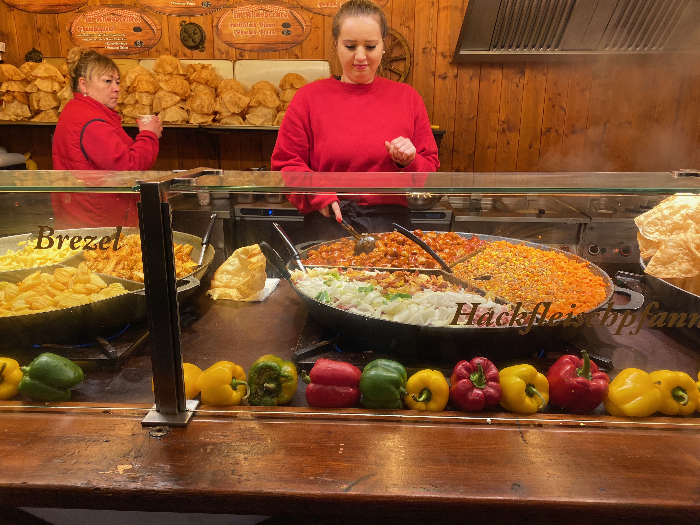
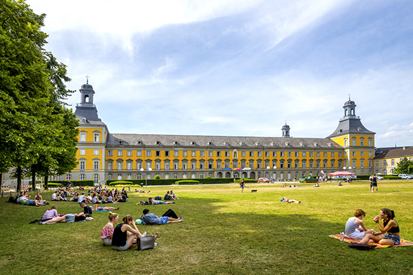

Museum Tours
Museum Island
Museum Island is a unique ensemble of five museums on Spree Island in the district of Mitte in Berlin. The entire complex is listed by UNESCO as a World Heritage Site.
One ticket allows you access to all five museums. Global Insight Germany will gladly assign a tour guide who has expertise in Germany history and one who speaks both English and German to ensure visitors gain insightful knowledge
Food Tours
Learn about German cuisine and experience it first hand!
From food stands to fine dining, Germany offers some of the best tastes around the world
Let Global Insights Germany arrange reservations for you and your group to the top rated restaurants in Germany and save money! Also, be sure try the local food option of the tour, showing what great flavors Germany has to offer, such as Bratwurst (Beer and wine included).
Restaurants include:
Aqua (Wolfsburg); La Vie (Osnabrück); Borchardt (Berlin); Tantris (Munich); Relish (Berlin);
University Tours
Attend college in Germany!
Studying overseas can be very cost efficient compared the United States
Attend top tier colleges for a lower tuition rate. Allow Global Insight Germany to ease the process of choosing a university by taking you and your group to see various different universities.
Tours are to universities such as Hof University of Applied Sciences, Universität Freiburg, Technische Universität München